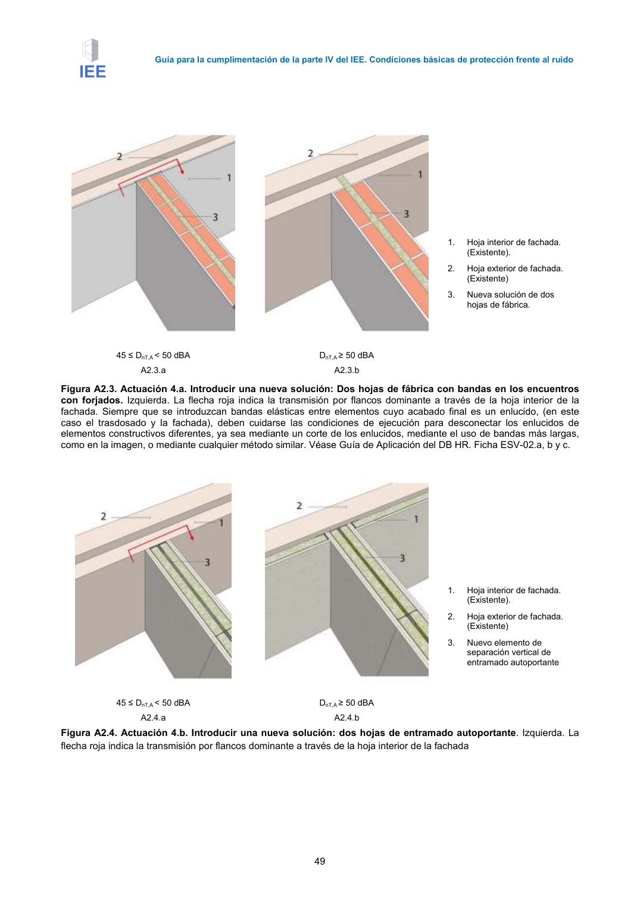

GUIA · Página 59 · versión 2016-11-01
SHA256: 813669d3066c0ff79457d57b80b0512a4fbb248bc5db1f7baf473c369a064738 · página física 59 de 65 · métodos de encabezado
solo si están cotejados.
Formatos: Markdown · JSON de bloques · PDF p. 59 · imagen PNG
Guía para la cumplimentación de la parte IV del IEE. Condiciones básicas de protección frente al ruido 49 1. Hoja interior de fachada. (Existente). 2. Hoja exterior de fachada. (Existente) 3. Nueva solución de dos hojas de fábrica. 45 ≤ DnT,A < 50 dBA DnT,A ≥ 50 dBA A2.3.a A2.3.b Figura A2.3. Actuación 4.a. Introducir una nueva solución: Dos hojas de fábrica con bandas en los encuentros con forjados. Izquierda. La flecha roja indica la transmisión por flancos dominante a través de la hoja interior de la fachada. Siempre que se introduzcan bandas elásticas entre elementos cuyo acabado final es un enlucido, (en este caso el trasdosado y la fachada), deben cuidarse las condiciones de ejecución para desconectar los enlucidos de elementos constructivos diferentes, ya sea mediante un corte de los enlucidos, mediante el uso de bandas más largas, como en la imagen, o mediante cualquier método similar. Véase Guía de Aplicación del DB HR. Ficha ESV-02.a, b y c. 1. Hoja interior de fachada. (Existente). 2. Hoja exterior de fachada. (Existente) 3. Nuevo elemento de separación vertical de entramado autoportante 45 ≤ DnT,A < 50 dBA DnT,A ≥ 50 dBA A2.4.a A2.4.b Figura A2.4. Actuación 4.b. Introducir una nueva solución: dos hojas de entramado autoportante. Izquierda. La flecha roja indica la transmisión por flancos dominante a través de la hoja interior de la fachada
